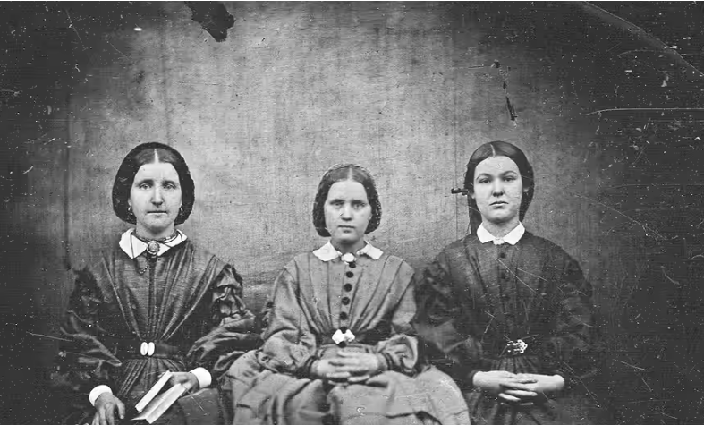

The Brontë Sisters
The Brontë sisters—Charlotte, Emily, and Anne—were 19th-century English novelists known for their literary masterpieces. Their works, including Jane Eyre, Wuthering Heights, and Agnes Grey, remain classics in English literature.

Emily Brontë
Emily Brontë (1818–1848) was an English novelist and poet best known for her only novel, Wuthering Heights, a masterpiece of Gothic fiction. Unlike her sisters, Emily was reclusive, preferring the moors over social gatherings. Her poetry, filled with dark, mystical themes, showcases her deep connection with nature. Though she died young, her novel remains a cornerstone of English literature.

Charlotte Brontë
Charlotte Brontë (1816–1855) was the eldest of the famous Brontë sisters and the author of Jane Eyre, a novel that revolutionized literature with its deep psychological insight and feminist undertones. Charlotte often wrote under the pseudonym Currer Bell to avoid gender bias. Her works reflect themes of independence, morality, and personal struggle.

Anne Brontë
Anne Brontë (1820–1849) was the youngest Brontë sister, known for her novels Agnes Grey and The Tenant of Wildfell Hall. Her works tackled real-world issues such as women's rights, alcoholism, and oppressive marriage, making her a pioneer in social realism. Unlike her sisters, Anne had a practical and realistic storytelling style.
Brontë Sisters: Key Facts
| Name | Date of Birth | Date of Death | Cause of Death | Notable Works |
|---|---|---|---|---|
| Emily Brontë | July 30, 1818 | December 19, 1848 | Tuberculosis | Wuthering Heights |
| Charlotte Brontë | April 21, 1816 | March 31, 1855 | Complications of pregnancy | Jane Eyre, Shirley, Villette |
| Anne Brontë | January 17, 1820 | May 28, 1849 | Tuberculosis | Agnes Grey, The Tenant of Wildfell Hall |